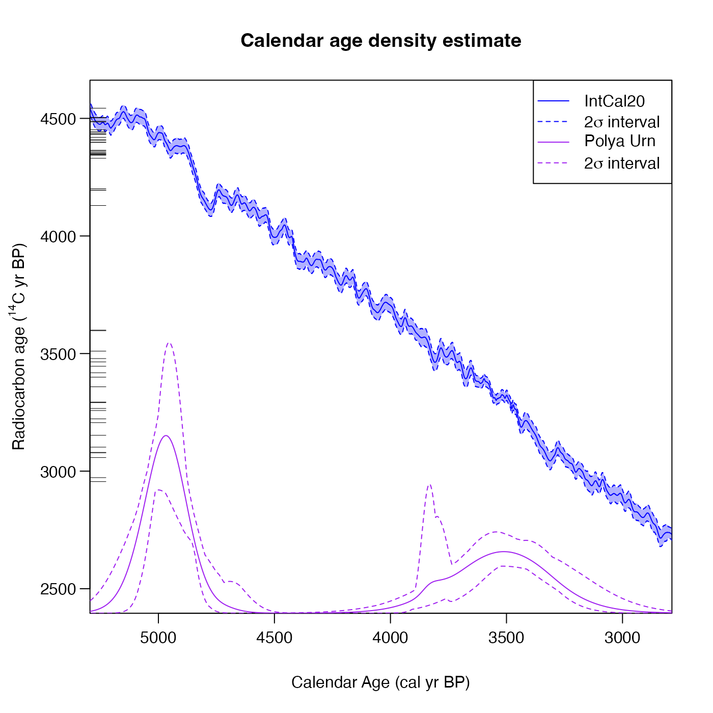
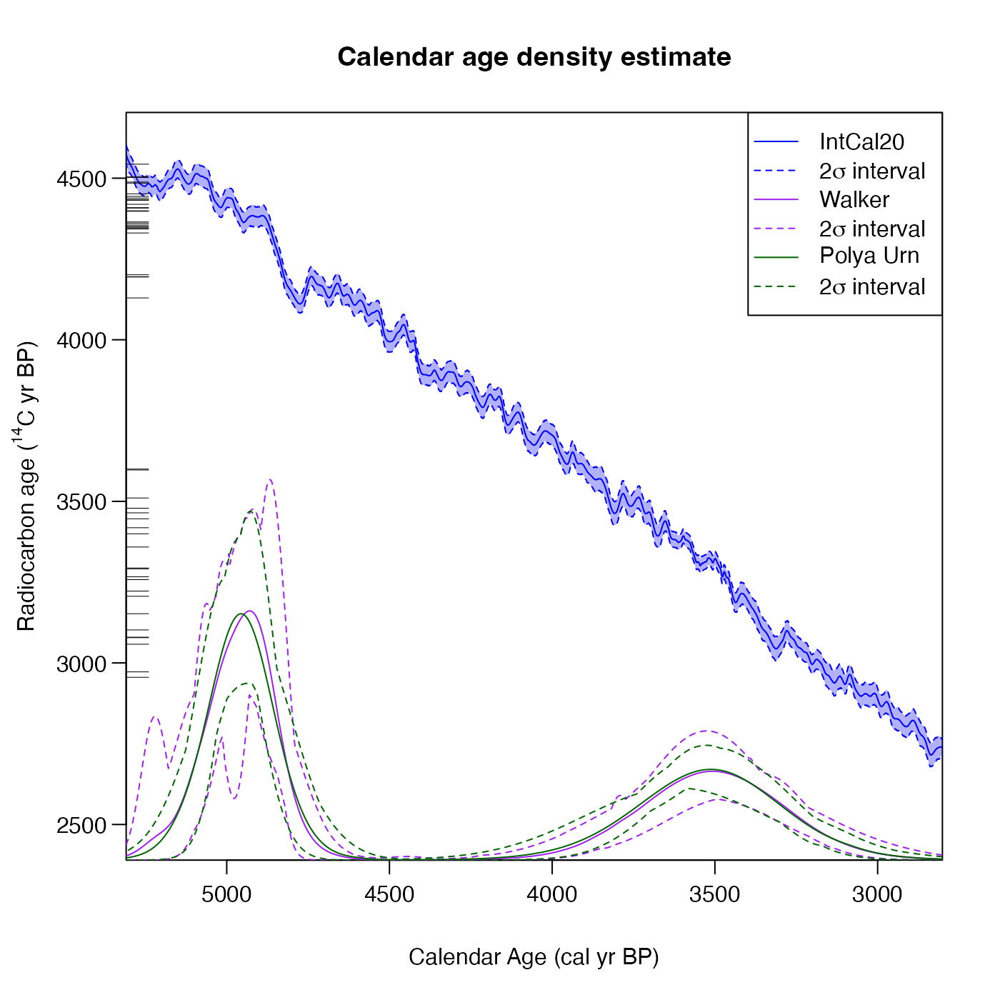
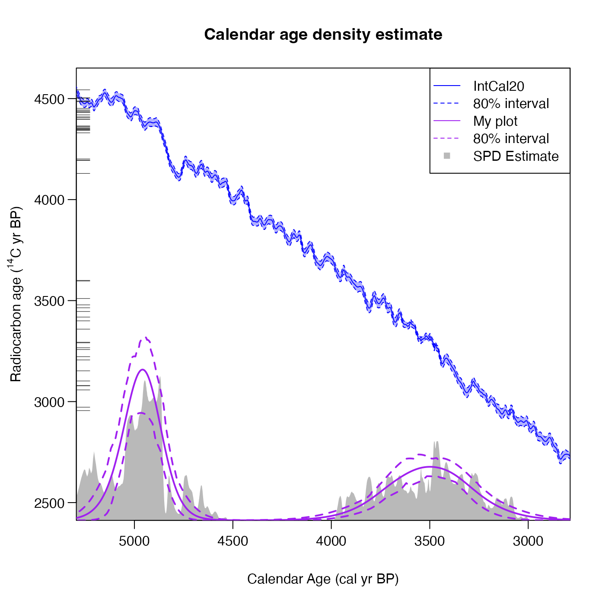

Plot Predictive Estimate of Shared Calendar Age Density from Bayesian Non-Parametric DPMM Output
Source:R/PlotPredictiveCalendarAgeDensity.R
PlotPredictiveCalendarAgeDensity.RdGiven output from one of the Bayesian non-parametric summarisation functions (either PolyaUrnBivarDirichlet or WalkerBivarDirichlet) calculate and plot the predictive (summarised/shared) calendar age density and probability intervals on a given calendar age grid.
Will show the original set of radiocarbon determinations (those you are summarising), the chosen calibration curve, and the summarised predictive calendar age density on the same plot. Can also optionally show the SPD estimate.
Note: If all you are interested in is the estimated value of the predictive density on a grid, without an accompanying plot, you can use FindPredictiveCalendarAgeDensity instead.
For more information read the vignette: vignette("Non-parametric-summed-density", package = "carbondate")
Usage
PlotPredictiveCalendarAgeDensity(
output_data,
n_posterior_samples = 5000,
calibration_curve = NULL,
plot_14C_age = TRUE,
plot_cal_age_scale = "BP",
show_SPD = FALSE,
show_confidence_intervals = TRUE,
interval_width = "2sigma",
bespoke_probability = NA,
denscale = 3,
resolution = 1,
n_burn = NA,
n_end = NA
)Arguments
- output_data
The return value from one of the Bayesian non-parametric DPMM functions, e.g. PolyaUrnBivarDirichlet or WalkerBivarDirichlet, or a list, each item containing one of these return values. Optionally, the output data can have an extra list item named
labelwhich is used to set the label on the plot legend.- n_posterior_samples
Number of samples it will draw, after having removed
n_burn, from the (thinned) realisations stored in the DPMM outputs to estimate the predictive calendar age density. These samples may be repeats if the number of, post burn-in, realisations is less thann_posterior_samples. If not given, 5000 is used.- calibration_curve
This is usually not required since the name of the calibration curve variable is saved in the output data. However, if the variable with this name is no longer in your environment then you should pass the calibration curve here. If provided, this should be a dataframe which should contain at least 3 columns entitled
calendar_age,c14_ageandc14_sig. This format matches intcal20.- plot_14C_age
Whether to use the radiocarbon age (\({}^{14}\)C yr BP) as the units of the y-axis in the plot. Defaults to
TRUE. IfFALSEuses F\({}^{14}\)C concentration instead.- plot_cal_age_scale
The calendar scale to use for the x-axis. Allowed values are "BP", "AD" and "BC". The default is "BP" corresponding to plotting in cal yr BP.
- show_SPD
Whether to calculate and show the summed probability distribution on the plot (optional). Default is
FALSE.- show_confidence_intervals
Whether to show the pointwise confidence intervals (at the chosen probability level) on the plot. Default is
TRUE.- interval_width
The confidence intervals to show for both the calibration curve and the predictive density. Choose from one of
"1sigma"(68.3%),"2sigma"(95.4%) and"bespoke". Default is"2sigma".- bespoke_probability
The probability to use for the confidence interval if
"bespoke"is chosen above. E.g., if 0.95 is chosen, then the 95% confidence interval is calculated. Ignored if"bespoke"is not chosen.- denscale
Whether to scale the vertical range of the summarised calendar age density plot relative to the calibration curve plot (optional). Default is 3 which means that the maximum predictive density will be at 1/3 of the height of the plot.
- resolution
The distance between calendar ages at which to calculate the predictive shared density. These ages will be created on a regular grid that automatically covers the calendar period of the given set of \({}^{14}\)C samples. Default is 1.
- n_burn
The number of MCMC iterations that should be discarded as burn-in (i.e., considered to be occurring before the MCMC has converged). This relates to the number of iterations (
n_iter) when running the original update functions (not the thinnedoutput_data). Any MCMC iterations before this are not used in the calculations. If not given, the first half of the MCMC chain is discarded. Note: The maximum value that the function will allow isn_iter - 100 * n_thin(wheren_iterandn_thinare the arguments given to PolyaUrnBivarDirichlet or WalkerBivarDirichlet) which would leave only 100 of the (thinned) values inoutput_data.- n_end
The last iteration in the original MCMC chain to use in the calculations. Assumed to be the total number of iterations performed, i.e.
n_iter, if not given.
Value
A list, each item containing a data frame of the calendar_age, the
density_mean and the confidence intervals for the density
density_ci_lower and density_ci_upper for each set of output data.
See also
FindPredictiveCalendarAgeDensity if only interested in the estimated value of the predictive density on a grid; PlotNumberOfClusters and PlotCalendarAgeDensityIndividualSample for more plotting functions using DPMM output.
Examples
# NOTE: All these examples are shown with a small n_iter and n_posterior_samples
# to speed up execution.
# Try n_iter and n_posterior_samples as the function defaults.
polya_urn_output <- PolyaUrnBivarDirichlet(
two_normals$c14_age,
two_normals$c14_sig,
intcal20,
n_iter = 500,
show_progress = FALSE)
walker_output <- WalkerBivarDirichlet(
two_normals$c14_age,
two_normals$c14_sig,
intcal20,
n_iter = 500,
show_progress = FALSE)
# Plot results for a single calibration
PlotPredictiveCalendarAgeDensity(polya_urn_output, n_posterior_samples = 50)

# Plot results from two calibrations on the same plot
PlotPredictiveCalendarAgeDensity(
list(walker_output, polya_urn_output), n_posterior_samples = 50)

# Plot and show the 80% confidence interval, show the SPD, add a custom label
polya_urn_output$label = "My plot"
PlotPredictiveCalendarAgeDensity(
polya_urn_output,
n_posterior_samples = 50,
interval_width = "bespoke",
bespoke_probability = 0.8,
show_SPD = TRUE)
